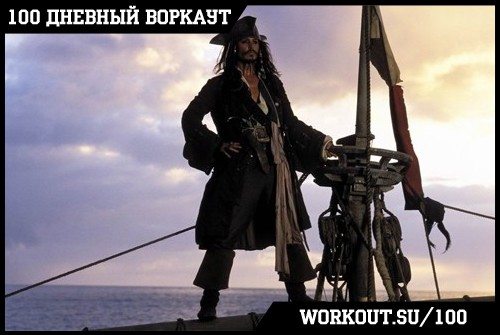
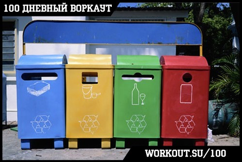
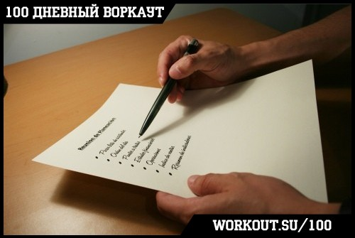
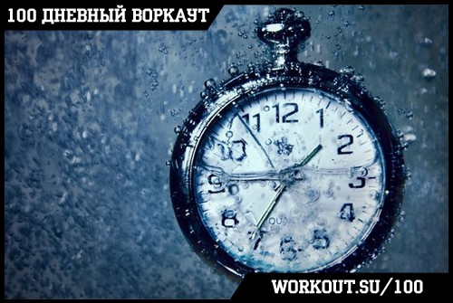

100 Дневный воркаут
<==== Вернуться к оглавлению
День 28. Правила управления временем
К концу подходит четвертая по счету неделя нашей образовательной программы
"100 дневный воркаут"
, и всю эту неделю мы так или иначе затрагивали вопрос рационального и эффективного использования имеющегося в вашем распоряжении времени. Как бы вы поступили, если бы узнали, что у вас на самом деле гораздо больше свободного времени, чем вам кажется? Может быть дело не в том, что 24 часов в сутках не хватает для жизни, а в том, что вы используете их не самым рациональным образом? Я думаю, что после сегодняшнего инфо-поста вы по-новому взгляните на то, сколько на самом деле времени у вас есть ;)
Но перед этим напоминаю, что сегодня вместо кругов вы выполняете упражнения на растяжку и тренируете гибкость, надеюсь никто не забыл об этом?
!!! Этот день считается полноценным пройденным днём программы вне зависимости от того, тренируетесь вы сегодня или отдыхаете !!!
И у Леонардо Да Винчи было 24 часа в сутках, и у Николы Теслы было 24 часа в сутках, и у Эдиссона тоже было 24 часа в сутках! И это не помешало им сделать все те невероятные вещи, которые они сделали. Поэтому весь вопрос, на самом деле заключается не в том, сколько времени у вас есть в наличии, а в том, как вы проводите это время и на что тратите его. Именно об этом и поговорим сегодня.
Всё написанное ниже может звучать несколько пафосно, но факт остаётся фактом, эти три шага действительно работают и позволят вам стать более продуктивными!
Шаг первый: Создайте видение

Перед тем как отправиться в путешествие, нужно иметь перед собой чёткое представление того, куда именно вы хотите попасть. И дело даже не в том, что бесцельные скитания это тоже весело и романтично, а в том, что бесцельные скитания не приводят к желаемой цели! В жизни всё тоже самое, если вы хотите достичь каких-либо целей (я сейчас говорю глобально, а не только в плане здоровья и внешнего вида), то нужно эти самые цели поставить.
Целеполагание лучше начинать от более глобальных вещей к менее глобальным. Поэтому самый простой вариант с которого можно начать - закройте глаза и постарайтесь представить себе себя через несколько лет. Временной горизонт может быть различным, но чаще всего используют от 1 года до 10 лет. Постарайтесь сделать ваше представление максимально точным и детальным. Теперь возьмите чистый лист бумаги и запишите всё то, что вы только что представили.
Отлично, теперь у вас есть не только ваша текущая действительность, но так же и представление того, чего вы хотите достичь через определённое время. Всё что осталось сделать - проложить путь от сегодняшнего момента до желаемого, то есть определиться с теми задачами, которые необходимо будет выполнить, чтобы реализовать цели ;)
Шаг второй: Избавьтесь от мусора

На самом деле первый шаг не только позволяет вам составить перечень задач, которые позволят вам достигнуть желаемого результата, но так же даёт и другой мощный инструмент! Теперь вы всегда можете задать себе вопрос "то, чем я сейчас занимаюсь, приближает меня к моим целям или нет?"
Это очень простой вопрос, но он позволит сфокусироваться на достижении поставленных целей и сократить количество времени, потраченного впустую!
Однажды у великого художника Микеланджело спросили как ему удаётся создавать такие прекрасные скульптуры, на что мастер ответил "Я просто отсекаю лишнее".
Шаг третий: Делайте дела

После того, как у вас остались только полезные дела (ну или почти только, мы ведь не роботы и всем нам нужно иногда расслабиться ) казалось бы самое время перейти к их выполнению! Однако, стоит сделать перед этим ещё одну вещь.
Разделите все свои дела на 4 группы по характеристикам важность и срочность. То есть у вас будут важные и срочные дела, важные и не срочные, неважные и срочные и неважные и не срочные. Для примера возьмём учёбу и экзамены. В течение учебного года итоговый экзамен является важным, но не срочным делом. Однако, по мере приближения заветной сессии это дело становится всё более и более срочным (особенно, если вы до сих пор не потратили ни часа на подготовку!). Таким образом своё внимание нужно фокусировать на делах, которые попадают в первые две категории, и чем больше вы будете выполнять дел из второй категории, тем меньше их будет в первой (если написать инфо-посты для 100 дневного воркаута заранее, не нужно будет сидеть вечером и писать их . Нужно так же стараться максимально быстро решать дела и задачи из третьей категории и сводить к минимуму всё, что попадает в четвёртую.
На самом деле эти три шага довольно простые или даже банальные, но в своё время они мне очень помогли в плане самоорганизации, поэтому я и решил поделиться. Надеюсь они так же помогут и вам (а там глядишь решат и проблему выделения времени для тренировок ), ну а если вы знаете какие-нибудь ещё полезные штуки по поводу управления временем, то обязательно пишите в комментариях!
Притча о времени

Представьте себе, что существует банк, который переводит вам каждое утро сумму 86400 рублей. Сумма, оставшаяся от этой суммы после дневных трат, не переходит в счёт следующего дня. Ночью счёт обнуляется. Что бы вы делали с деньгамй «Старались растратить всё до последней копейки,» - скажете вы.
На самом деле у каждого из нас есть такой банк. Имя этого банка – время.
Каждое утро нам предоставляется кредит в 86400 секунд. Каждую ночь счёт обнуляется. Остаток не идёт в счёт следующего дня. Нет минуса на счету. Каждый день начинает новый отсчёт. Если вы не использовали дневной кредит – потеря только ваша. Нет пути назад. Нельзя взять взаймы у следующего дня. Мы обязаны жить настоящим в счёт того времени, которое выделено нам в данный день. Чтобы достичь чего-либо – вложите правильно ваше время.
- Чтобы понять цену года – спросите ученика, оставшегося на второй год.
- Чтобы понять цену месяца – спросите мать, родившую недоношенного ребёнка.
- Чтобы понять цену одного часа – спросите влюблённых, ожидающих встречи.
- Чтобы понять цену одной минуты – спросите человека, который опоздал на поезд.
- Чтобы понять цену одной секунды – спросите того, кто избежал автокатастрофы.
- Чтобы понять цену сотой доли секунды – спросите спортсмена, занявшего второе место.
Поймите ценность мгновения. Время не ждёт человека. То, что было вчера, уже история. Что будет завтра – не дано знать никому! Цените своё время и используйте его с пользой!
======> День 29. Новое упражнение: Выпады